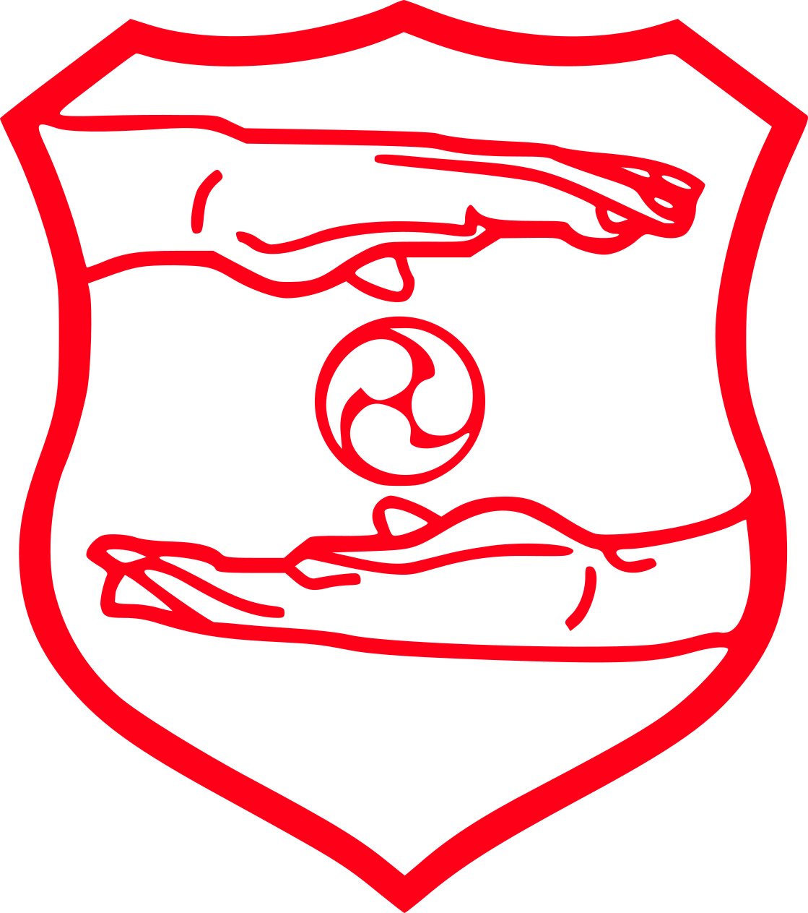

Goju Ryu
El Gōjū Ryū es un estilo de karate-do fundado en Okinawa por el
maestro Chōjun Miyagui. La traducción literal es go "剛" ('duro'),
ju "柔" ('suave') y ryu "流" ('estilo/escuela/fuente'), por lo que
el significado es traducido como el estilo de lo duro y lo suave,
dado que es una combinación de estos conceptos.
El karate Goju-Ryu mantiene su marcado origen chino, concretamente
en el estilo de Kung fu de la grulla blanca del sur, la cual
enfatiza varios patrones de respiración, fortalecimiento y
desensibilización corporal, golpes a mano abierta, y la lucha a
corta distancia, por medio de: golpes, patadas, barridos, atrapes,
bloqueos, desvíos, lanzamientos y luxaciones articulares. El estilo
está desarrollado para funcionar bien en la distancia media y corta,
las cuales son comunes a la gran mayoría de situaciones de la
defensa personal real.

Karate Do
El Karate es un arte marcial tradicional basada en algunos estilos
de las artes marciales chinas (wushu), y en otras disciplinas
provenientes de Okinawa (Japón) como el Tegumi (mano de agarre) y el
Kobudō (el arte marcial ancestral). El nombre japonés se compone de
los Kanjis "空" (Kara, 'vacío') "手" (Te, 'mano') y "道" (Do,
'camino').
En los golpes del karate-Do se unifican la fuerza, la rapidez, la
respiración, el equilibrio, la tensión y la relajación al aplicar un
correcto giro de cadera y una conexión o sinergia muy precisa de
músculos y articulaciones, trasladando una gran parte del peso
corporal y del centro de gravedad al impacto.
El karate-do parte de la idea de forjar el cuerpo como un arma, de
tal forma que se pueda llegar a defenderse y sin sufrir mayor daño,
de ahí que en las escuelas tradicionales se haga tanto ahínco en el
endurecimiento físico.

Nin
"Nin" se puede traducir de manera general como "perseverancia",
"resistencia" o "paciencia". Es un concepto multifacético que
implica la capacidad de soportar desafíos, superar obstáculos y
mantenerse firme ante la adversidad. Esta cualidad se considera
fundamental en la cultura japonesa y se valora como una virtud
importante en la vida cotidiana.

FAKKO
Fakko, abreviatura de Federación Argentina de Karate y Kobudo
Okinawense, es una organización dedicada a promover y difundir el
karate y el kobudo okinawense en Argentina. El karate y el kobudo
son artes marciales tradicionales japonesas que tienen sus raíces en
la isla de Okinawa, antes conocida como el Reino de Ryukyu. Fakko
trabaja para preservar la autenticidad de estas disciplinas,
promoviendo la práctica de las formas tradicionales y el estudio de
su historia y filosofía. También organiza eventos, seminarios y
competiciones para fomentar el desarrollo y la comunidad en torno a
estas disciplinas en Argentina.